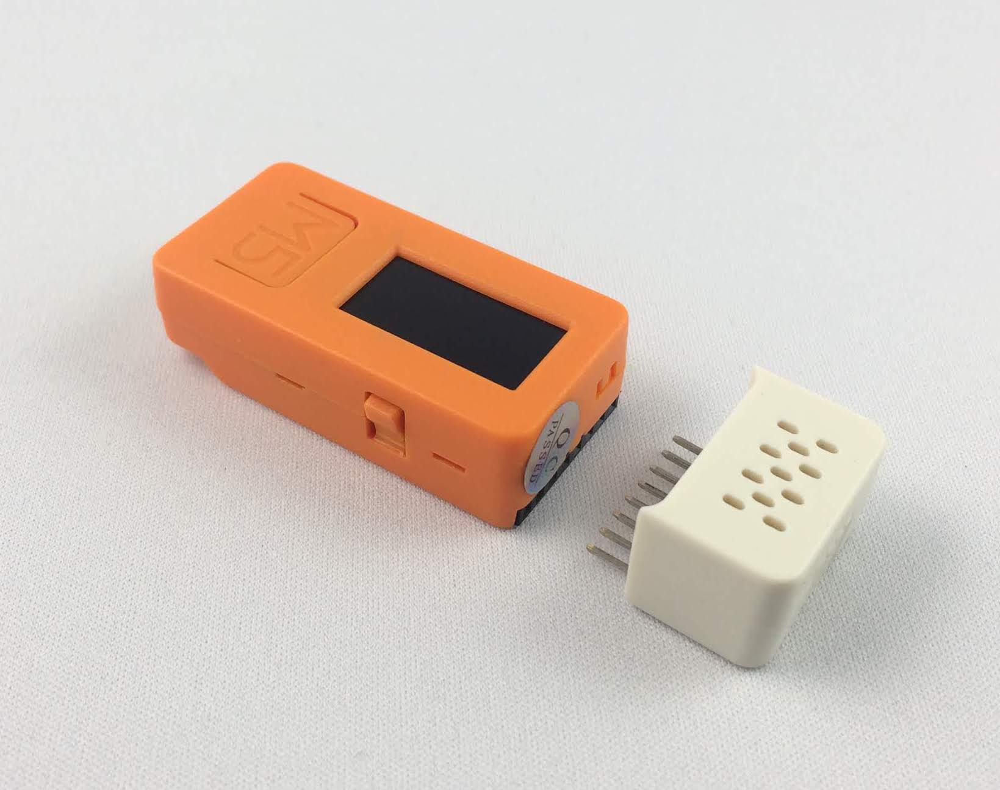
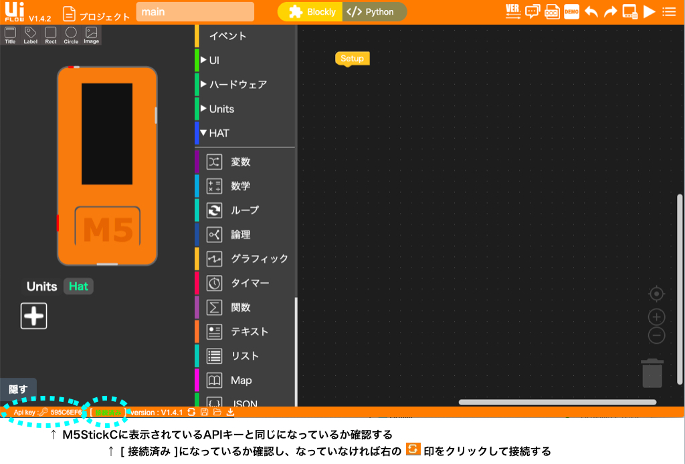
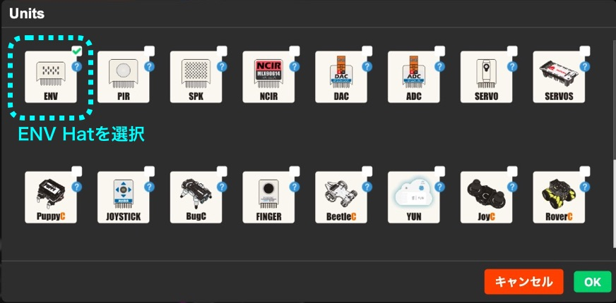
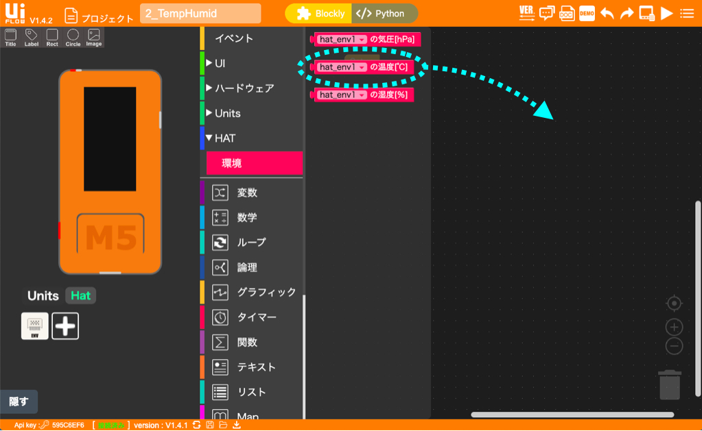
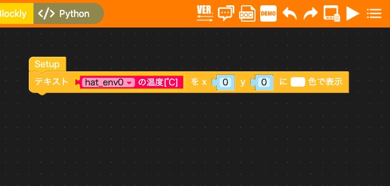
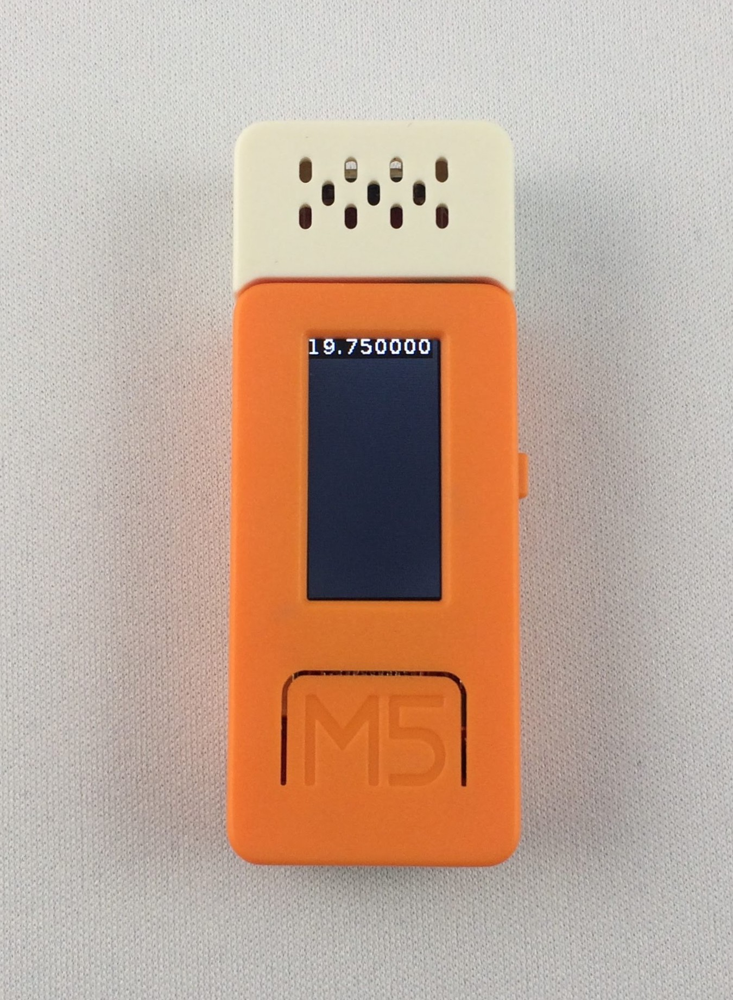
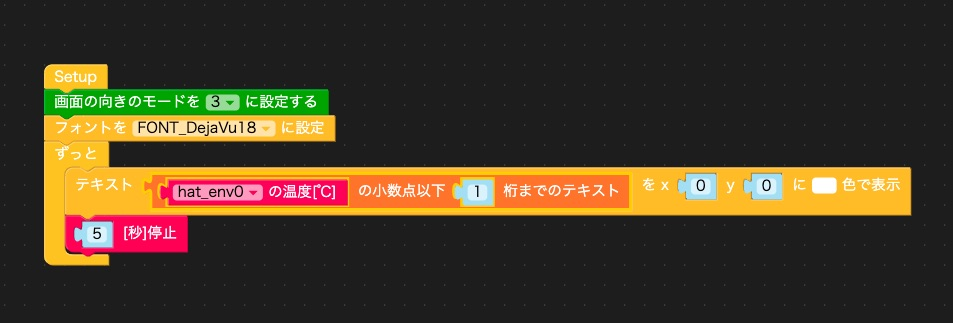
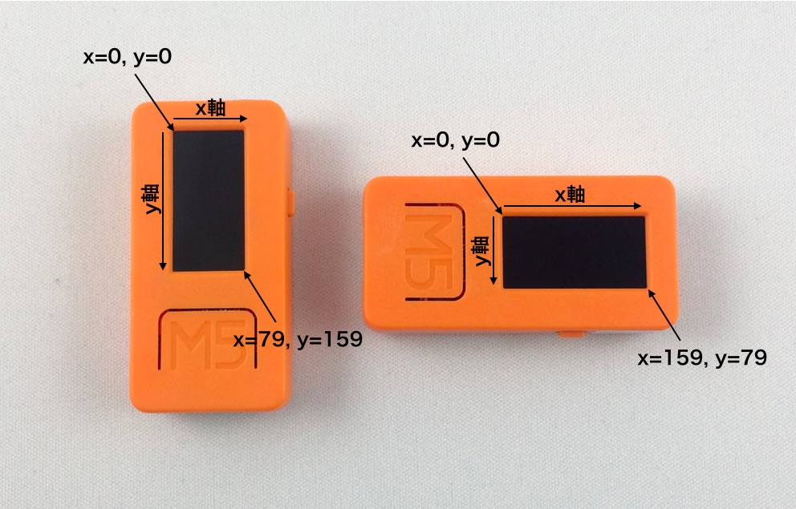
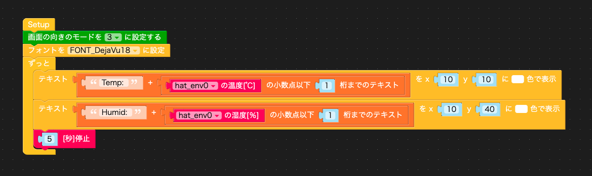
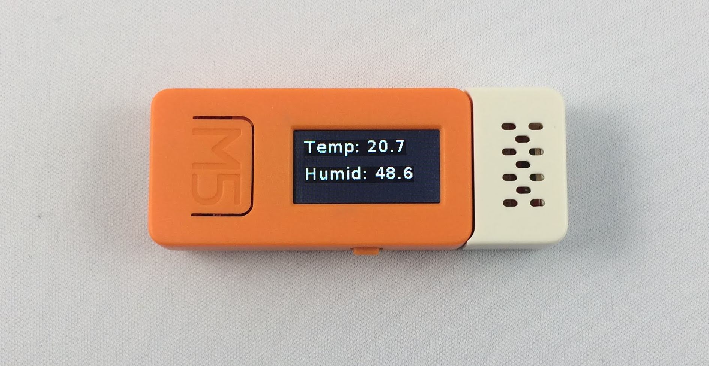

M5StackやM5StickCを使って、いろいろなものを作ったり、面白いものを作っている人を紹介したりするコーナー「M5Stackカフェ」。 第2回はM5StickCを使って温度計を作ってみます。
温度を測るために、温度センサを使います。M5StickCには「M5StickC ENV Hat」という温度、湿度、気圧と磁界が測れるセンサがあるので、これを使ってみましょう。
このセンサはHatといって、M5StickCの上部のソケットにHatのピンを挿して使います。Hatには温湿度・気圧センサの他に人感センサなどいろいろなセンサ類があり、これを使うことでコンパクトなセンサ端末が作れます。

M5StickCにENV Hatを挿しただけでは何もおこりません。プログラムを作ってM5StickCやENV Hatを制御する必要があります。
M5StackやM5StickCを制御するプログラムはいくつかの方法で作れます。その中で、比較的簡単にプログラムが作れるUIFlow(Blockly)を使います。UIFlow(Blockly)を使う準備方法は第1回の記事をご覧ください。
UIFlowはWi-FiでM5StickCにプログラムを転送できるので、USBケーブルでM5StickCとパソコンをつなぐ必要はありませんが、しばらくM5StickCを触っていなかったら、充電も兼ねてUSBケーブルでM5StickCとパソコンをつなぎましょう。
M5StickCの左側面のスイッチを押すと、M5StickCがリセットされ、Wi-Fiに接続し、APIキーが表示されます。APIキーが表示されない時は、 第1回の記事に沿ってM5StickCを初期設定してください。
次にパソコンのブラウザで次のアドレスにアクセスします。
ブラウザ画面左下のApi keyに、M5StickCの画面に表示されているAPIキーと同じものが表示されていることを確認します。Api keyが同じでない場合は、Api keyの欄をクリックして、M5StickCの画面に表示されているAPIキーを入力してください。Api keyの右の欄が[接続済み]になっていることを確認します。なっていない場合は、さらに右の更新ボタンをクリックして、UIFlowとM5StickCを接続します。
画面左側のM5StickCの下に「Hat」と表示されていることも確認します。表示されていない場合は、画面右上の「VER」というメニューをクリックして、「Lastest」を選択してください。小さい画面が現れたら、真ん中の「Switch but don’t save」をクリックしてください。

これでM5StickCのプログラムを作る準備は完了です。
これから新しいプログラムを作っていくので、画面左上の「プロジェクト」と書かれた右側の「main」の部分を「2_TempHumid」に変えておきましょう。
次に、「Hat」をクリックし、「＋」をクリックします。Hatの一覧が現れるので、ENVを選んで「OK」をクリックします。

真ん中のメニューの「HAT」を選択すると、「環境」が現れます。それが環境（Environmental）センサです。それをクリックすると、「hat_env0の温度[℃]」「hat_env0の湿度[%]」「hat_env0の気圧[hPa]」というブロックが現れます。まず、「hat_env0の温度[℃]」を選んで、右側のプログラムエリアにドラッグ＆ドロップします。

このブロックは「ENV Hat」というセンサから温度データを取得するブロックです。では取得した温度データをM5StickCの液晶画面に表示してみましょう。そのためには「グラフィック」メニューから「テキスト” ”をｘ0 ｙ0 に 色で表示」というブロックをドラッグ＆ドロップします。
「テキストを…」というブロックを「Setup」ブロックの下につなぎ、その中に「hat_env0の温度[℃]」ブロックを入れて、次の図のようにします。ここからはプログラムエリアの画面コピーを載せます。

画面右上の右三角をクリックしてください。プログラムがM5StickCに転送され、動き、M5StickCの液晶画面に温度らしき数字が表示されます。

このプログラムは温度を1回取得して液晶画面に表示したら終わりです。次に、このプログラムを改造して、5秒毎に繰り返し温度を取得して表示するようにしてみましょう。
そのためには、「イベント」メニューから「ずっと」ブロックを、「タイマー」メニューから「1[秒]停止」ブロックを選び、次のように組み合わせます。「1[秒]停止」ブロックの中の数字は5に変えます。

プログラムができたら、右上の右三角をクリックしてください。M5StickCの液晶画面の数字が5秒毎に更新されるようになりました。 このプログラムは、ENV Hatから温度を読み込んで液晶画面に表示し、5秒待って、同じ動作をずっと繰り返します。
今度は表示をもう少し見やすくしてみましょう。今は液晶画面の上に小さい字で小数点以下6桁の数字が表示されています。M5StickCの画面は縦長なので、90度回転させて、左（あるいは右）を上にして表示し、フォントも標準より大きなものに変えてみます。
画面を90度回転させるには「UI」メニューの「画面」の「画面の向きのモードを 0 に設定する」ブロックを使います。モードを1にするとM5StickCの右が上に、3にすると左が上になります。フォントは「グラフィック」メニューの「フォントを FONT_Default に設定」ブロックで設定します。「FONT_Default」の部分をいろいろ変えて、どんなフォントになるか試してみてください。
画面の向きとフォントの設定はプログラムが始まって1回だけ実行すればいいので、「Setup」ブロックと「ずっと」ブロックの間に置きます。
数字の桁数を指定するのは「テキスト」メニューの「□ の小数点以下 0 桁までのテキスト」ブロックを使います。数字の桁数なので「数学」メニューにあるかと思いましたが、「テキスト」メニューにありました。どのメニューにどんな機能ブロックがあるか、暇な時にいろいろと見ておくといいですね。
表示を見やすくしたプログラムは次のようになりました。

画面には次のように温度が表示されます。

「HAT」メニューの「環境」には「hat_env0の温度[℃]」の他に「hat_env0の湿度[%]」というブロックがありました。これを使って、温度と湿度を測って、画面に表示してみましょう。
温度の下に湿度を表示するには、どうしたらいいでしょう？
これには、テキストを表示するのに使っている「テキスト” ”をｘ0 ｙ0 に 色で表示」ブロックのｘとｙを指定することで好きな位置にテキストを表示できます。M5StickCの液晶画面には座標があり、左上が x = 0、y = 0になります。座標を表す時は x = 0、y = 0 の代わりに (0, 0) と書くことにします。右下の座標は、画面を縦にしたときは (79, 159)、横にした時は (159, 79) です。

温度の表示位置も左上過ぎるので、温度を (10, 10)、湿度を (10, 40) の位置に書いてみます。数字だけだと分かりにくいので、温度の表示には「Temp: 25.5」というように先頭に「Temp: 」「Humid: 」という文字も付けてみます。文字を付け足すには「テキスト」メニューの「” ” ＋ □」というブロックを使います。
プログラムは次のようになります。

実際の画面は次のように、温度と湿度が数字で表示されて、デジタル温湿度計のようになりました。

話が長くなってきたので、今回はこのくらいにします。作ったプログラムはUIFlowの下のフロッピーのアイコンをクリックして保存しておきましょう。プロジェクト名（2_TempHumid）に「.m5f」を付けたファイル名でダウンロードフォルダに保存されます。
「M5Stackカフェ」の第2回は温湿度センサを使って、温湿度計を作ってみました。いかがだったでしょうか？Hatを使いUIFlowでプログラムを作ると、簡単にセンサ端末が作れることがお分かりいただけたと思います。次は、光るものとか動くものとか、少し目立つものをお出ししたいです。